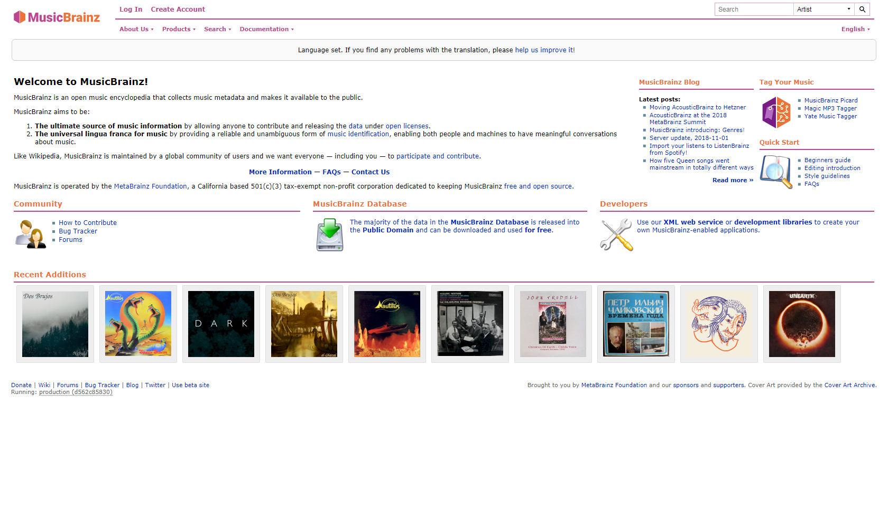
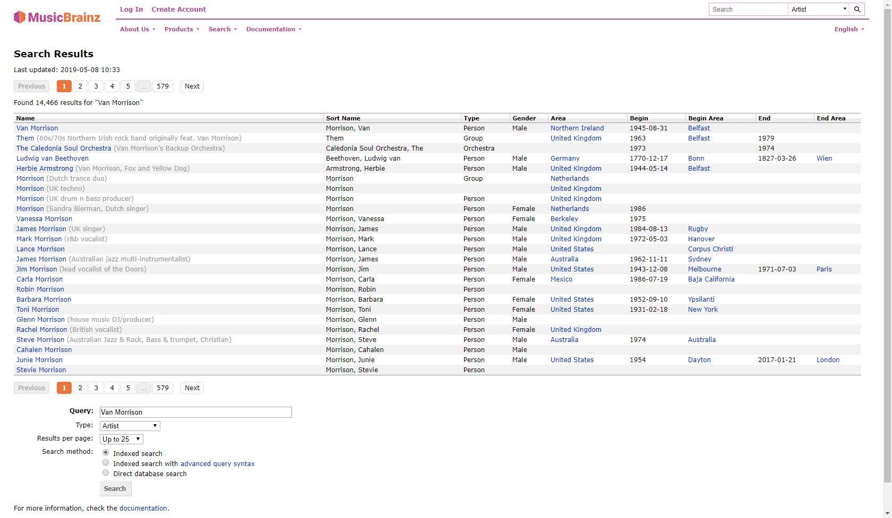
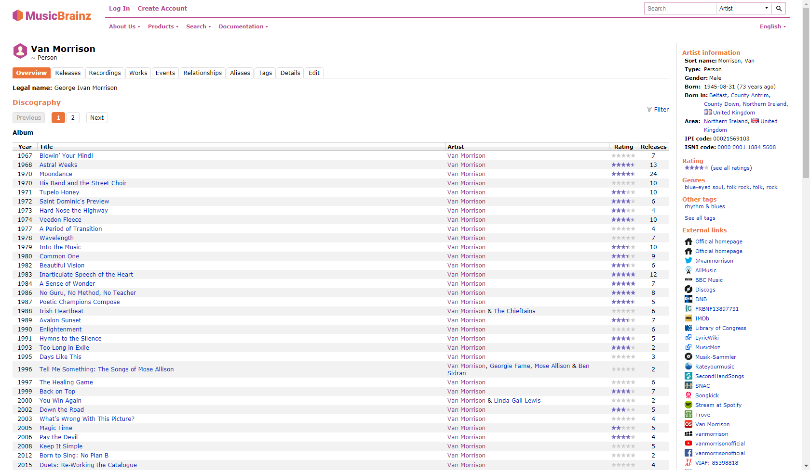
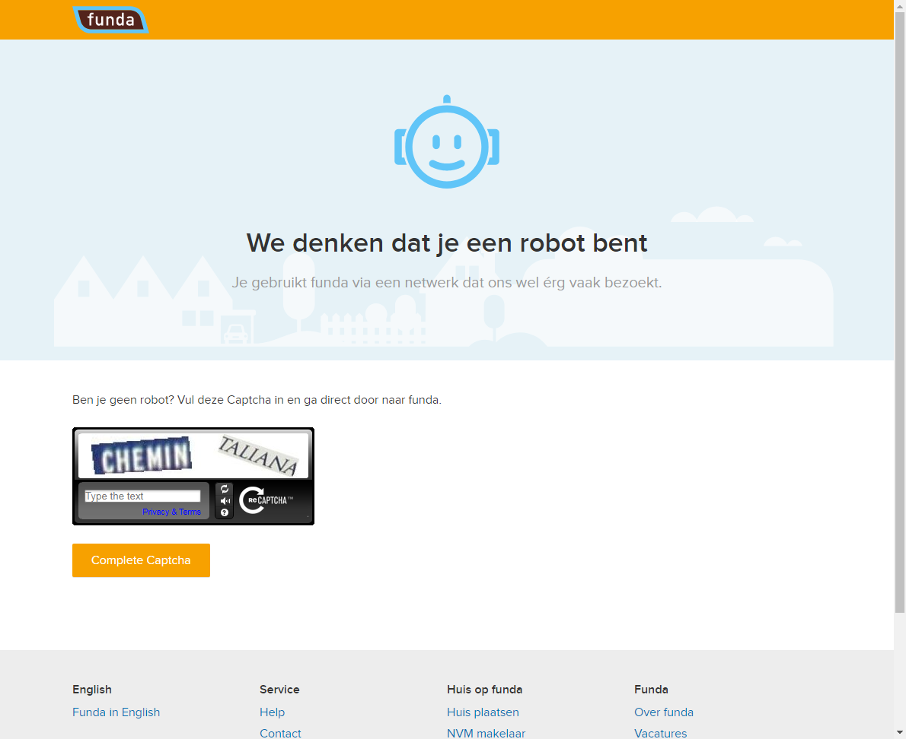

Website testing using BrowserTest with Storyboard
On this page we compare the asking price of the same house on two websites. We use a special version of Slim's ScriptTable, a storyboard, which will automatically take a screenshot after each action.
The configuration of Selenium (i.e. which browser to use) and starting the browser session is done in the SuiteSetup[?]. Which allows this configuration to be shared between tests. Closing the browser is done in SuiteTearDown, which happens after all tests are completed.
| storyboard | browser test | |||
| open | http://www.huizenzoeker.nl |  | ||
| enter Timed-out waiting (after 10s). |
Groenedijk, Utrecht | for | Plaats, postcode met straatnaam | |
| press enter |  | |||
| click Timed-out waiting (after 10s). |
Groenedijk 57 |  | ||
| $price<-[null] | value of | xpath=//div[@class='prijs']/strong | ||
| open | http://www.funda.nl |  | ||
| select Timed-out waiting (after 10s). |
€ 1.000.000 | for | Van | |
| enter org.openqa.selenium.UnsupportedCommandException: The test with session id 2229baf28bf540b49320596bdf7ff956 has already finished, and can't receive further commands. You can learn more at https://saucelabs.com/jobs/2229baf28bf540b49320596bdf7ff956 For help, please check https://wiki.saucelabs.com/display/DOCS/Common+Error+Messages Command duration or timeout: 91 milliseconds Build info: version: '3.4.0', revision: 'unknown', time: 'unknown' System info: host: 'testing-docker-042c94a6-06be-460e-8307-9264fc665e8e', ip: '172.17.0.7', os.name: 'Linux', os.arch: 'amd64', os.version: '4.8.12-040812-generic', java.version: '1.8.0_131' Driver info: org.openqa.selenium.remote.RemoteWebDriver Capabilities [{applicationCacheEnabled=false, rotatable=false, networkConnectionEnabled=false, mobileEmulationEnabled=false, chrome={chromedriverVersion=2.29.461591 (62ebf098771772160f391d75e589dc567915b233), userDataDir=C:\Users\ADMINI~1\AppData\Local\Temp\scoped_dir1980_9592}, takesHeapSnapshot=true, pageLoadStrategy=normal, hasMetadata=true, hasTouchScreen=false, handlesAlerts=true, databaseEnabled=false, version=59.0.3071.86, platform=XP, browserConnectionEnabled=false, nativeEvents=true, acceptSslCerts=true, webdriver.remote.sessionid=2229baf28bf540b49320596bdf7ff956, locationContextEnabled=true, webStorageEnabled=true, takesScreenshot=true, browserName=chrome, javascriptEnabled=true, cssSelectorsEnabled=true, unexpectedAlertBehaviour=}] Session ID: 2229baf28bf540b49320596bdf7ff956 at sun.reflect.NativeConstructorAccessorImpl.newInstance0(Native Method) at sun.reflect.NativeConstructorAccessorImpl.newInstance(NativeConstructorAccessorImpl.java:62) at sun.reflect.DelegatingConstructorAccessorImpl.newInstance(DelegatingConstructorAccessorImpl.java:45) at java.lang.reflect.Constructor.newInstance(Constructor.java:423) at org.openqa.selenium.remote.ErrorHandler.createThrowable(ErrorHandler.java:215) at org.openqa.selenium.remote.ErrorHandler.throwIfResponseFailed(ErrorHandler.java:167) at org.openqa.selenium.remote.RemoteWebDriver.execute(RemoteWebDriver.java:671) at org.openqa.selenium.remote.RemoteWebDriver$RemoteTargetLocator.defaultContent(RemoteWebDriver.java:1010) at nl.hsac.fitnesse.fixture.util.selenium.SeleniumHelper.switchToDefaultContent(SeleniumHelper.java:1440) at nl.hsac.fitnesse.fixture.util.selenium.SeleniumHelper.switchToParentFrame(SeleniumHelper.java:1469) at nl.hsac.fitnesse.fixture.util.selenium.TryAllFramesConditionDecorator.invokeInFrames(TryAllFramesConditionDecorator.java:62) at nl.hsac.fitnesse.fixture.util.selenium.TryAllFramesConditionDecorator.apply(TryAllFramesConditionDecorator.java:37) at nl.hsac.fitnesse.fixture.util.selenium.TryAllFramesConditionDecorator.apply(TryAllFramesConditionDecorator.java:16) at nl.hsac.fitnesse.fixture.util.selenium.SeleniumHelper$2.apply(SeleniumHelper.java:1158) at nl.hsac.fitnesse.fixture.util.selenium.SeleniumHelper$2.apply(SeleniumHelper.java:1154) at org.openqa.selenium.support.ui.FluentWait.until(FluentWait.java:209) at nl.hsac.fitnesse.fixture.util.selenium.SeleniumHelper.waitUntil(SeleniumHelper.java:1143) at nl.hsac.fitnesse.fixture.slim.web.BrowserTest.waitUntilImpl(BrowserTest.java:1843) at nl.hsac.fitnesse.fixture.slim.web.BrowserTest.waitUntil(BrowserTest.java:1773) at nl.hsac.fitnesse.fixture.slim.web.BrowserTest.invokedWrappedInWaitUntil(BrowserTest.java:97) at nl.hsac.fitnesse.fixture.slim.web.BrowserTest.invoke(BrowserTest.java:58) at nl.hsac.fitnesse.fixture.slim.SlimFixture.aroundSlimInvoke(SlimFixture.java:30) at sun.reflect.GeneratedMethodAccessor1.invoke(Unknown Source) at sun.reflect.DelegatingMethodAccessorImpl.invoke(DelegatingMethodAccessorImpl.java:43) at java.lang.reflect.Method.invoke(Method.java:498) at fitnesse.slim.fixtureInteraction.DefaultInteraction.methodInvoke(DefaultInteraction.java:147) at fitnesse.slim.fixtureInteraction.DefaultInteraction.callMethod(DefaultInteraction.java:130) at fitnesse.slim.fixtureInteraction.DefaultInteraction.invokeMethod(DefaultInteraction.java:114) at fitnesse.slim.fixtureInteraction.DefaultInteraction.findAndInvoke(DefaultInteraction.java:92) at fitnesse.slim.MethodExecutor.findAndInvoke(MethodExecutor.java:18) at fitnesse.slim.FixtureMethodExecutor.execute(FixtureMethodExecutor.java:18) at fitnesse.slim.StatementExecutor.getMethodExecutionResult(StatementExecutor.java:130) at fitnesse.slim.StatementExecutor.call(StatementExecutor.java:103) at fitnesse.slim.instructions.CallInstruction.executeInternal(CallInstruction.java:35) at fitnesse.slim.instructions.Instruction.execute(Instruction.java:29) at fitnesse.slim.ListExecutor$Executive.executeStatement(ListExecutor.java:49) at fitnesse.slim.ListExecutor$Executive.executeStatements(ListExecutor.java:43) at fitnesse.slim.ListExecutor.execute(ListExecutor.java:85) at fitnesse.slim.SlimServer.executeInstructions(SlimServer.java:82) at fitnesse.slim.SlimServer.processOneSetOfInstructions(SlimServer.java:75) at fitnesse.slim.SlimServer.tryProcessInstructions(SlimServer.java:62) at fitnesse.slim.SlimServer.serve(SlimServer.java:47) at fitnesse.testsystems.slim.InProcessSlimClient$1.run(InProcessSlimClient.java:53) at java.lang.Thread.run(Thread.java:748) |
Groenedijk, Utrecht | as | Plaats, buurt, adres etc | org.openqa.selenium.UnsupportedCommandException: The test with session id 2229baf28bf540b49320596bdf7ff956 has already finished, and can't receive further commands. You can learn more at https://saucelabs.com/jobs/2229baf28bf540b49320596bdf7ff956 For help, please check https://wiki.saucelabs.com/display/DOCS/Common+Error+Messages Command duration or timeout: 88 milliseconds Build info: version: '3.4.0', revision: 'unknown', time: 'unknown' System info: host: 'testing-docker-042c94a6-06be-460e-8307-9264fc665e8e', ip: '172.17.0.7', os.name: 'Linux', os.arch: 'amd64', os.version: '4.8.12-040812-generic', java.version: '1.8.0_131' Driver info: org.openqa.selenium.remote.RemoteWebDriver Capabilities [{applicationCacheEnabled=false, rotatable=false, networkConnectionEnabled=false, mobileEmulationEnabled=false, chrome={chromedriverVersion=2.29.461591 (62ebf098771772160f391d75e589dc567915b233), userDataDir=C:\Users\ADMINI~1\AppData\Local\Temp\scoped_dir1980_9592}, takesHeapSnapshot=true, pageLoadStrategy=normal, hasMetadata=true, hasTouchScreen=false, handlesAlerts=true, databaseEnabled=false, version=59.0.3071.86, platform=XP, browserConnectionEnabled=false, nativeEvents=true, acceptSslCerts=true, webdriver.remote.sessionid=2229baf28bf540b49320596bdf7ff956, locationContextEnabled=true, webStorageEnabled=true, takesScreenshot=true, browserName=chrome, javascriptEnabled=true, cssSelectorsEnabled=true, unexpectedAlertBehaviour=}] Session ID: 2229baf28bf540b49320596bdf7ff956 at sun.reflect.NativeConstructorAccessorImpl.newInstance0(Native Method) at sun.reflect.NativeConstructorAccessorImpl.newInstance(NativeConstructorAccessorImpl.java:62) at sun.reflect.DelegatingConstructorAccessorImpl.newInstance(DelegatingConstructorAccessorImpl.java:45) at java.lang.reflect.Constructor.newInstance(Constructor.java:423) at org.openqa.selenium.remote.ErrorHandler.createThrowable(ErrorHandler.java:215) at org.openqa.selenium.remote.ErrorHandler.throwIfResponseFailed(ErrorHandler.java:167) at org.openqa.selenium.remote.RemoteWebDriver.execute(RemoteWebDriver.java:671) at org.openqa.selenium.remote.RemoteWebDriver.execute(RemoteWebDriver.java:694) at org.openqa.selenium.remote.RemoteWebDriver.getScreenshotAs(RemoteWebDriver.java:382) at nl.hsac.fitnesse.fixture.util.selenium.SeleniumHelper.takeScreenshot(SeleniumHelper.java:1297) at nl.hsac.fitnesse.fixture.slim.web.BrowserTest.createScreenshot(BrowserTest.java:1744) at nl.hsac.fitnesse.fixture.slim.web.BrowserTest.takeScreenshot(BrowserTest.java:1706) at sun.reflect.GeneratedMethodAccessor8.invoke(Unknown Source) at sun.reflect.DelegatingMethodAccessorImpl.invoke(DelegatingMethodAccessorImpl.java:43) at java.lang.reflect.Method.invoke(Method.java:498) at fitnesse.slim.fixtureInteraction.DefaultInteraction.methodInvoke(DefaultInteraction.java:147) at nl.hsac.fitnesse.fixture.slim.SlimFixture.invoke(SlimFixture.java:50) at nl.hsac.fitnesse.fixture.slim.web.BrowserTest.superInvoke(BrowserTest.java:104) at nl.hsac.fitnesse.fixture.slim.web.BrowserTest.invoke(BrowserTest.java:56) at nl.hsac.fitnesse.fixture.slim.SlimFixture.aroundSlimInvoke(SlimFixture.java:30) at sun.reflect.GeneratedMethodAccessor1.invoke(Unknown Source) at sun.reflect.DelegatingMethodAccessorImpl.invoke(DelegatingMethodAccessorImpl.java:43) at java.lang.reflect.Method.invoke(Method.java:498) at fitnesse.slim.fixtureInteraction.DefaultInteraction.methodInvoke(DefaultInteraction.java:147) at fitnesse.slim.fixtureInteraction.DefaultInteraction.callMethod(DefaultInteraction.java:130) at fitnesse.slim.fixtureInteraction.DefaultInteraction.invokeMethod(DefaultInteraction.java:114) at fitnesse.slim.fixtureInteraction.DefaultInteraction.findAndInvoke(DefaultInteraction.java:92) at fitnesse.slim.MethodExecutor.findAndInvoke(MethodExecutor.java:18) at fitnesse.slim.FixtureMethodExecutor.execute(FixtureMethodExecutor.java:18) at fitnesse.slim.StatementExecutor.getMethodExecutionResult(StatementExecutor.java:130) at fitnesse.slim.StatementExecutor.call(StatementExecutor.java:103) at fitnesse.slim.instructions.CallInstruction.executeInternal(CallInstruction.java:35) at fitnesse.slim.instructions.Instruction.execute(Instruction.java:29) at fitnesse.slim.ListExecutor$Executive.executeStatement(ListExecutor.java:49) at fitnesse.slim.ListExecutor$Executive.executeStatements(ListExecutor.java:43) at fitnesse.slim.ListExecutor.execute(ListExecutor.java:85) at fitnesse.slim.SlimServer.executeInstructions(SlimServer.java:82) at fitnesse.slim.SlimServer.processOneSetOfInstructions(SlimServer.java:75) at fitnesse.slim.SlimServer.tryProcessInstructions(SlimServer.java:62) at fitnesse.slim.SlimServer.serve(SlimServer.java:47) at fitnesse.testsystems.slim.InProcessSlimClient$1.run(InProcessSlimClient.java:53) at java.lang.Thread.run(Thread.java:748) |
| note | select option from autocomplete | |||
| press org.openqa.selenium.UnsupportedCommandException: The test with session id 2229baf28bf540b49320596bdf7ff956 has already finished, and can't receive further commands. You can learn more at https://saucelabs.com/jobs/2229baf28bf540b49320596bdf7ff956 For help, please check https://wiki.saucelabs.com/display/DOCS/Common+Error+Messages Command duration or timeout: 90 milliseconds Build info: version: '3.4.0', revision: 'unknown', time: 'unknown' System info: host: 'testing-docker-042c94a6-06be-460e-8307-9264fc665e8e', ip: '172.17.0.7', os.name: 'Linux', os.arch: 'amd64', os.version: '4.8.12-040812-generic', java.version: '1.8.0_131' Driver info: org.openqa.selenium.remote.RemoteWebDriver Capabilities [{applicationCacheEnabled=false, rotatable=false, networkConnectionEnabled=false, mobileEmulationEnabled=false, chrome={chromedriverVersion=2.29.461591 (62ebf098771772160f391d75e589dc567915b233), userDataDir=C:\Users\ADMINI~1\AppData\Local\Temp\scoped_dir1980_9592}, takesHeapSnapshot=true, pageLoadStrategy=normal, hasMetadata=true, hasTouchScreen=false, handlesAlerts=true, databaseEnabled=false, version=59.0.3071.86, platform=XP, browserConnectionEnabled=false, nativeEvents=true, acceptSslCerts=true, webdriver.remote.sessionid=2229baf28bf540b49320596bdf7ff956, locationContextEnabled=true, webStorageEnabled=true, takesScreenshot=true, browserName=chrome, javascriptEnabled=true, cssSelectorsEnabled=true, unexpectedAlertBehaviour=}] Session ID: 2229baf28bf540b49320596bdf7ff956 at sun.reflect.NativeConstructorAccessorImpl.newInstance0(Native Method) at sun.reflect.NativeConstructorAccessorImpl.newInstance(NativeConstructorAccessorImpl.java:62) at sun.reflect.DelegatingConstructorAccessorImpl.newInstance(DelegatingConstructorAccessorImpl.java:45) at java.lang.reflect.Constructor.newInstance(Constructor.java:423) at org.openqa.selenium.remote.ErrorHandler.createThrowable(ErrorHandler.java:215) at org.openqa.selenium.remote.ErrorHandler.throwIfResponseFailed(ErrorHandler.java:167) at org.openqa.selenium.remote.RemoteWebDriver.execute(RemoteWebDriver.java:671) at org.openqa.selenium.remote.RemoteWebDriver.execute(RemoteWebDriver.java:694) at org.openqa.selenium.remote.RemoteWebDriver$RemoteTargetLocator.activeElement(RemoteWebDriver.java:1015) at nl.hsac.fitnesse.fixture.util.selenium.SeleniumHelper.getActiveElement(SeleniumHelper.java:1000) at nl.hsac.fitnesse.fixture.slim.web.BrowserTest.sendKeysToActiveElement(BrowserTest.java:581) at nl.hsac.fitnesse.fixture.slim.web.BrowserTest.press(BrowserTest.java:561) at sun.reflect.NativeMethodAccessorImpl.invoke0(Native Method) at sun.reflect.NativeMethodAccessorImpl.invoke(NativeMethodAccessorImpl.java:62) at sun.reflect.DelegatingMethodAccessorImpl.invoke(DelegatingMethodAccessorImpl.java:43) at java.lang.reflect.Method.invoke(Method.java:498) at fitnesse.slim.fixtureInteraction.DefaultInteraction.methodInvoke(DefaultInteraction.java:147) at nl.hsac.fitnesse.fixture.slim.SlimFixture.invoke(SlimFixture.java:50) at nl.hsac.fitnesse.fixture.slim.web.BrowserTest.superInvoke(BrowserTest.java:104) at nl.hsac.fitnesse.fixture.slim.web.BrowserTest.invoke(BrowserTest.java:56) at nl.hsac.fitnesse.fixture.slim.SlimFixture.aroundSlimInvoke(SlimFixture.java:30) at sun.reflect.GeneratedMethodAccessor1.invoke(Unknown Source) at sun.reflect.DelegatingMethodAccessorImpl.invoke(DelegatingMethodAccessorImpl.java:43) at java.lang.reflect.Method.invoke(Method.java:498) at fitnesse.slim.fixtureInteraction.DefaultInteraction.methodInvoke(DefaultInteraction.java:147) at fitnesse.slim.fixtureInteraction.DefaultInteraction.callMethod(DefaultInteraction.java:130) at fitnesse.slim.fixtureInteraction.DefaultInteraction.invokeMethod(DefaultInteraction.java:114) at fitnesse.slim.fixtureInteraction.DefaultInteraction.findAndInvoke(DefaultInteraction.java:92) at fitnesse.slim.MethodExecutor.findAndInvoke(MethodExecutor.java:18) at fitnesse.slim.FixtureMethodExecutor.execute(FixtureMethodExecutor.java:18) at fitnesse.slim.StatementExecutor.getMethodExecutionResult(StatementExecutor.java:130) at fitnesse.slim.StatementExecutor.call(StatementExecutor.java:103) at fitnesse.slim.instructions.CallInstruction.executeInternal(CallInstruction.java:35) at fitnesse.slim.instructions.Instruction.execute(Instruction.java:29) at fitnesse.slim.ListExecutor$Executive.executeStatement(ListExecutor.java:49) at fitnesse.slim.ListExecutor$Executive.executeStatements(ListExecutor.java:43) at fitnesse.slim.ListExecutor.execute(ListExecutor.java:85) at fitnesse.slim.SlimServer.executeInstructions(SlimServer.java:82) at fitnesse.slim.SlimServer.processOneSetOfInstructions(SlimServer.java:75) at fitnesse.slim.SlimServer.tryProcessInstructions(SlimServer.java:62) at fitnesse.slim.SlimServer.serve(SlimServer.java:47) at fitnesse.testsystems.slim.InProcessSlimClient$1.run(InProcessSlimClient.java:53) at java.lang.Thread.run(Thread.java:748) |
tab | org.openqa.selenium.UnsupportedCommandException: The test with session id 2229baf28bf540b49320596bdf7ff956 has already finished, and can't receive further commands. You can learn more at https://saucelabs.com/jobs/2229baf28bf540b49320596bdf7ff956 For help, please check https://wiki.saucelabs.com/display/DOCS/Common+Error+Messages Command duration or timeout: 90 milliseconds Build info: version: '3.4.0', revision: 'unknown', time: 'unknown' System info: host: 'testing-docker-042c94a6-06be-460e-8307-9264fc665e8e', ip: '172.17.0.7', os.name: 'Linux', os.arch: 'amd64', os.version: '4.8.12-040812-generic', java.version: '1.8.0_131' Driver info: org.openqa.selenium.remote.RemoteWebDriver Capabilities [{applicationCacheEnabled=false, rotatable=false, networkConnectionEnabled=false, mobileEmulationEnabled=false, chrome={chromedriverVersion=2.29.461591 (62ebf098771772160f391d75e589dc567915b233), userDataDir=C:\Users\ADMINI~1\AppData\Local\Temp\scoped_dir1980_9592}, takesHeapSnapshot=true, pageLoadStrategy=normal, hasMetadata=true, hasTouchScreen=false, handlesAlerts=true, databaseEnabled=false, version=59.0.3071.86, platform=XP, browserConnectionEnabled=false, nativeEvents=true, acceptSslCerts=true, webdriver.remote.sessionid=2229baf28bf540b49320596bdf7ff956, locationContextEnabled=true, webStorageEnabled=true, takesScreenshot=true, browserName=chrome, javascriptEnabled=true, cssSelectorsEnabled=true, unexpectedAlertBehaviour=}] Session ID: 2229baf28bf540b49320596bdf7ff956 at sun.reflect.NativeConstructorAccessorImpl.newInstance0(Native Method) at sun.reflect.NativeConstructorAccessorImpl.newInstance(NativeConstructorAccessorImpl.java:62) at sun.reflect.DelegatingConstructorAccessorImpl.newInstance(DelegatingConstructorAccessorImpl.java:45) at java.lang.reflect.Constructor.newInstance(Constructor.java:423) at org.openqa.selenium.remote.ErrorHandler.createThrowable(ErrorHandler.java:215) at org.openqa.selenium.remote.ErrorHandler.throwIfResponseFailed(ErrorHandler.java:167) at org.openqa.selenium.remote.RemoteWebDriver.execute(RemoteWebDriver.java:671) at org.openqa.selenium.remote.RemoteWebDriver.execute(RemoteWebDriver.java:694) at org.openqa.selenium.remote.RemoteWebDriver.getScreenshotAs(RemoteWebDriver.java:382) at nl.hsac.fitnesse.fixture.util.selenium.SeleniumHelper.takeScreenshot(SeleniumHelper.java:1297) at nl.hsac.fitnesse.fixture.slim.web.BrowserTest.createScreenshot(BrowserTest.java:1744) at nl.hsac.fitnesse.fixture.slim.web.BrowserTest.takeScreenshot(BrowserTest.java:1706) at sun.reflect.GeneratedMethodAccessor8.invoke(Unknown Source) at sun.reflect.DelegatingMethodAccessorImpl.invoke(DelegatingMethodAccessorImpl.java:43) at java.lang.reflect.Method.invoke(Method.java:498) at fitnesse.slim.fixtureInteraction.DefaultInteraction.methodInvoke(DefaultInteraction.java:147) at nl.hsac.fitnesse.fixture.slim.SlimFixture.invoke(SlimFixture.java:50) at nl.hsac.fitnesse.fixture.slim.web.BrowserTest.superInvoke(BrowserTest.java:104) at nl.hsac.fitnesse.fixture.slim.web.BrowserTest.invoke(BrowserTest.java:56) at nl.hsac.fitnesse.fixture.slim.SlimFixture.aroundSlimInvoke(SlimFixture.java:30) at sun.reflect.GeneratedMethodAccessor1.invoke(Unknown Source) at sun.reflect.DelegatingMethodAccessorImpl.invoke(DelegatingMethodAccessorImpl.java:43) at java.lang.reflect.Method.invoke(Method.java:498) at fitnesse.slim.fixtureInteraction.DefaultInteraction.methodInvoke(DefaultInteraction.java:147) at fitnesse.slim.fixtureInteraction.DefaultInteraction.callMethod(DefaultInteraction.java:130) at fitnesse.slim.fixtureInteraction.DefaultInteraction.invokeMethod(DefaultInteraction.java:114) at fitnesse.slim.fixtureInteraction.DefaultInteraction.findAndInvoke(DefaultInteraction.java:92) at fitnesse.slim.MethodExecutor.findAndInvoke(MethodExecutor.java:18) at fitnesse.slim.FixtureMethodExecutor.execute(FixtureMethodExecutor.java:18) at fitnesse.slim.StatementExecutor.getMethodExecutionResult(StatementExecutor.java:130) at fitnesse.slim.StatementExecutor.call(StatementExecutor.java:103) at fitnesse.slim.instructions.CallInstruction.executeInternal(CallInstruction.java:35) at fitnesse.slim.instructions.Instruction.execute(Instruction.java:29) at fitnesse.slim.ListExecutor$Executive.executeStatement(ListExecutor.java:49) at fitnesse.slim.ListExecutor$Executive.executeStatements(ListExecutor.java:43) at fitnesse.slim.ListExecutor.execute(ListExecutor.java:85) at fitnesse.slim.SlimServer.executeInstructions(SlimServer.java:82) at fitnesse.slim.SlimServer.processOneSetOfInstructions(SlimServer.java:75) at fitnesse.slim.SlimServer.tryProcessInstructions(SlimServer.java:62) at fitnesse.slim.SlimServer.serve(SlimServer.java:47) at fitnesse.testsystems.slim.InProcessSlimClient$1.run(InProcessSlimClient.java:53) at java.lang.Thread.run(Thread.java:748) | ||
| click org.openqa.selenium.UnsupportedCommandException: The test with session id 2229baf28bf540b49320596bdf7ff956 has already finished, and can't receive further commands. You can learn more at https://saucelabs.com/jobs/2229baf28bf540b49320596bdf7ff956 For help, please check https://wiki.saucelabs.com/display/DOCS/Common+Error+Messages Command duration or timeout: 92 milliseconds Build info: version: '3.4.0', revision: 'unknown', time: 'unknown' System info: host: 'testing-docker-042c94a6-06be-460e-8307-9264fc665e8e', ip: '172.17.0.7', os.name: 'Linux', os.arch: 'amd64', os.version: '4.8.12-040812-generic', java.version: '1.8.0_131' Driver info: org.openqa.selenium.remote.RemoteWebDriver Capabilities [{applicationCacheEnabled=false, rotatable=false, networkConnectionEnabled=false, mobileEmulationEnabled=false, chrome={chromedriverVersion=2.29.461591 (62ebf098771772160f391d75e589dc567915b233), userDataDir=C:\Users\ADMINI~1\AppData\Local\Temp\scoped_dir1980_9592}, takesHeapSnapshot=true, pageLoadStrategy=normal, hasMetadata=true, hasTouchScreen=false, handlesAlerts=true, databaseEnabled=false, version=59.0.3071.86, platform=XP, browserConnectionEnabled=false, nativeEvents=true, acceptSslCerts=true, webdriver.remote.sessionid=2229baf28bf540b49320596bdf7ff956, locationContextEnabled=true, webStorageEnabled=true, takesScreenshot=true, browserName=chrome, javascriptEnabled=true, cssSelectorsEnabled=true, unexpectedAlertBehaviour=}] Session ID: 2229baf28bf540b49320596bdf7ff956 *** Element info: {Using=link text, value=Zoek} at sun.reflect.NativeConstructorAccessorImpl.newInstance0(Native Method) at sun.reflect.NativeConstructorAccessorImpl.newInstance(NativeConstructorAccessorImpl.java:62) at sun.reflect.DelegatingConstructorAccessorImpl.newInstance(DelegatingConstructorAccessorImpl.java:45) at java.lang.reflect.Constructor.newInstance(Constructor.java:423) at org.openqa.selenium.remote.ErrorHandler.createThrowable(ErrorHandler.java:215) at org.openqa.selenium.remote.ErrorHandler.throwIfResponseFailed(ErrorHandler.java:167) at org.openqa.selenium.remote.RemoteWebDriver.execute(RemoteWebDriver.java:671) at org.openqa.selenium.remote.RemoteWebDriver.findElements(RemoteWebDriver.java:437) at org.openqa.selenium.remote.RemoteWebDriver.findElementsByLinkText(RemoteWebDriver.java:465) at org.openqa.selenium.By$ByLinkText.findElements(By.java:241) at org.openqa.selenium.remote.RemoteWebDriver.findElements(RemoteWebDriver.java:398) at nl.hsac.fitnesse.fixture.util.selenium.SeleniumHelper.findElement(SeleniumHelper.java:1189) at nl.hsac.fitnesse.fixture.util.selenium.SeleniumHelper.findElement(SeleniumHelper.java:1031) at nl.hsac.fitnesse.fixture.util.selenium.SeleniumHelper.findElement(SeleniumHelper.java:1020) at nl.hsac.fitnesse.fixture.util.selenium.SeleniumHelper.findByLinkText(SeleniumHelper.java:277) at nl.hsac.fitnesse.fixture.util.selenium.SeleniumHelper.getElementToClick(SeleniumHelper.java:132) at nl.hsac.fitnesse.fixture.slim.web.BrowserTest.getElementToClick(BrowserTest.java:746) at nl.hsac.fitnesse.fixture.slim.web.BrowserTest.clickImp(BrowserTest.java:684) at nl.hsac.fitnesse.fixture.slim.web.BrowserTest.click(BrowserTest.java:662) at sun.reflect.GeneratedMethodAccessor5.invoke(Unknown Source) at sun.reflect.DelegatingMethodAccessorImpl.invoke(DelegatingMethodAccessorImpl.java:43) at java.lang.reflect.Method.invoke(Method.java:498) at fitnesse.slim.fixtureInteraction.DefaultInteraction.methodInvoke(DefaultInteraction.java:147) at nl.hsac.fitnesse.fixture.slim.SlimFixture.invoke(SlimFixture.java:50) at nl.hsac.fitnesse.fixture.slim.web.BrowserTest.superInvoke(BrowserTest.java:104) at nl.hsac.fitnesse.fixture.slim.web.BrowserTest$1.apply(BrowserTest.java:68) at nl.hsac.fitnesse.fixture.slim.web.BrowserTest$1.apply(BrowserTest.java:64) at nl.hsac.fitnesse.fixture.util.selenium.TryAllFramesConditionDecorator.apply(TryAllFramesConditionDecorator.java:34) at nl.hsac.fitnesse.fixture.util.selenium.TryAllFramesConditionDecorator.apply(TryAllFramesConditionDecorator.java:16) at nl.hsac.fitnesse.fixture.util.selenium.SeleniumHelper$2.apply(SeleniumHelper.java:1158) at nl.hsac.fitnesse.fixture.util.selenium.SeleniumHelper$2.apply(SeleniumHelper.java:1154) at org.openqa.selenium.support.ui.FluentWait.until(FluentWait.java:209) at nl.hsac.fitnesse.fixture.util.selenium.SeleniumHelper.waitUntil(SeleniumHelper.java:1143) at nl.hsac.fitnesse.fixture.slim.web.BrowserTest.waitUntilImpl(BrowserTest.java:1843) at nl.hsac.fitnesse.fixture.slim.web.BrowserTest.waitUntil(BrowserTest.java:1773) at nl.hsac.fitnesse.fixture.slim.web.BrowserTest.invokedWrappedInWaitUntil(BrowserTest.java:97) at nl.hsac.fitnesse.fixture.slim.web.BrowserTest.invoke(BrowserTest.java:58) at nl.hsac.fitnesse.fixture.slim.SlimFixture.aroundSlimInvoke(SlimFixture.java:30) at sun.reflect.GeneratedMethodAccessor1.invoke(Unknown Source) at sun.reflect.DelegatingMethodAccessorImpl.invoke(DelegatingMethodAccessorImpl.java:43) at java.lang.reflect.Method.invoke(Method.java:498) at fitnesse.slim.fixtureInteraction.DefaultInteraction.methodInvoke(DefaultInteraction.java:147) at fitnesse.slim.fixtureInteraction.DefaultInteraction.callMethod(DefaultInteraction.java:130) at fitnesse.slim.fixtureInteraction.DefaultInteraction.invokeMethod(DefaultInteraction.java:114) at fitnesse.slim.fixtureInteraction.DefaultInteraction.findAndInvoke(DefaultInteraction.java:92) at fitnesse.slim.MethodExecutor.findAndInvoke(MethodExecutor.java:18) at fitnesse.slim.FixtureMethodExecutor.execute(FixtureMethodExecutor.java:18) at fitnesse.slim.StatementExecutor.getMethodExecutionResult(StatementExecutor.java:130) at fitnesse.slim.StatementExecutor.call(StatementExecutor.java:103) at fitnesse.slim.instructions.CallInstruction.executeInternal(CallInstruction.java:35) at fitnesse.slim.instructions.Instruction.execute(Instruction.java:29) at fitnesse.slim.ListExecutor$Executive.executeStatement(ListExecutor.java:49) at fitnesse.slim.ListExecutor$Executive.executeStatements(ListExecutor.java:43) at fitnesse.slim.ListExecutor.execute(ListExecutor.java:85) at fitnesse.slim.SlimServer.executeInstructions(SlimServer.java:82) at fitnesse.slim.SlimServer.processOneSetOfInstructions(SlimServer.java:75) at fitnesse.slim.SlimServer.tryProcessInstructions(SlimServer.java:62) at fitnesse.slim.SlimServer.serve(SlimServer.java:47) at fitnesse.testsystems.slim.InProcessSlimClient$1.run(InProcessSlimClient.java:53) at java.lang.Thread.run(Thread.java:748) |
Zoek | org.openqa.selenium.UnsupportedCommandException: The test with session id 2229baf28bf540b49320596bdf7ff956 has already finished, and can't receive further commands. You can learn more at https://saucelabs.com/jobs/2229baf28bf540b49320596bdf7ff956 For help, please check https://wiki.saucelabs.com/display/DOCS/Common+Error+Messages Command duration or timeout: 90 milliseconds Build info: version: '3.4.0', revision: 'unknown', time: 'unknown' System info: host: 'testing-docker-042c94a6-06be-460e-8307-9264fc665e8e', ip: '172.17.0.7', os.name: 'Linux', os.arch: 'amd64', os.version: '4.8.12-040812-generic', java.version: '1.8.0_131' Driver info: org.openqa.selenium.remote.RemoteWebDriver Capabilities [{applicationCacheEnabled=false, rotatable=false, networkConnectionEnabled=false, mobileEmulationEnabled=false, chrome={chromedriverVersion=2.29.461591 (62ebf098771772160f391d75e589dc567915b233), userDataDir=C:\Users\ADMINI~1\AppData\Local\Temp\scoped_dir1980_9592}, takesHeapSnapshot=true, pageLoadStrategy=normal, hasMetadata=true, hasTouchScreen=false, handlesAlerts=true, databaseEnabled=false, version=59.0.3071.86, platform=XP, browserConnectionEnabled=false, nativeEvents=true, acceptSslCerts=true, webdriver.remote.sessionid=2229baf28bf540b49320596bdf7ff956, locationContextEnabled=true, webStorageEnabled=true, takesScreenshot=true, browserName=chrome, javascriptEnabled=true, cssSelectorsEnabled=true, unexpectedAlertBehaviour=}] Session ID: 2229baf28bf540b49320596bdf7ff956 at sun.reflect.NativeConstructorAccessorImpl.newInstance0(Native Method) at sun.reflect.NativeConstructorAccessorImpl.newInstance(NativeConstructorAccessorImpl.java:62) at sun.reflect.DelegatingConstructorAccessorImpl.newInstance(DelegatingConstructorAccessorImpl.java:45) at java.lang.reflect.Constructor.newInstance(Constructor.java:423) at org.openqa.selenium.remote.ErrorHandler.createThrowable(ErrorHandler.java:215) at org.openqa.selenium.remote.ErrorHandler.throwIfResponseFailed(ErrorHandler.java:167) at org.openqa.selenium.remote.RemoteWebDriver.execute(RemoteWebDriver.java:671) at org.openqa.selenium.remote.RemoteWebDriver.execute(RemoteWebDriver.java:694) at org.openqa.selenium.remote.RemoteWebDriver.getScreenshotAs(RemoteWebDriver.java:382) at nl.hsac.fitnesse.fixture.util.selenium.SeleniumHelper.takeScreenshot(SeleniumHelper.java:1297) at nl.hsac.fitnesse.fixture.slim.web.BrowserTest.createScreenshot(BrowserTest.java:1744) at nl.hsac.fitnesse.fixture.slim.web.BrowserTest.takeScreenshot(BrowserTest.java:1706) at sun.reflect.GeneratedMethodAccessor8.invoke(Unknown Source) at sun.reflect.DelegatingMethodAccessorImpl.invoke(DelegatingMethodAccessorImpl.java:43) at java.lang.reflect.Method.invoke(Method.java:498) at fitnesse.slim.fixtureInteraction.DefaultInteraction.methodInvoke(DefaultInteraction.java:147) at nl.hsac.fitnesse.fixture.slim.SlimFixture.invoke(SlimFixture.java:50) at nl.hsac.fitnesse.fixture.slim.web.BrowserTest.superInvoke(BrowserTest.java:104) at nl.hsac.fitnesse.fixture.slim.web.BrowserTest.invoke(BrowserTest.java:56) at nl.hsac.fitnesse.fixture.slim.SlimFixture.aroundSlimInvoke(SlimFixture.java:30) at sun.reflect.GeneratedMethodAccessor1.invoke(Unknown Source) at sun.reflect.DelegatingMethodAccessorImpl.invoke(DelegatingMethodAccessorImpl.java:43) at java.lang.reflect.Method.invoke(Method.java:498) at fitnesse.slim.fixtureInteraction.DefaultInteraction.methodInvoke(DefaultInteraction.java:147) at fitnesse.slim.fixtureInteraction.DefaultInteraction.callMethod(DefaultInteraction.java:130) at fitnesse.slim.fixtureInteraction.DefaultInteraction.invokeMethod(DefaultInteraction.java:114) at fitnesse.slim.fixtureInteraction.DefaultInteraction.findAndInvoke(DefaultInteraction.java:92) at fitnesse.slim.MethodExecutor.findAndInvoke(MethodExecutor.java:18) at fitnesse.slim.FixtureMethodExecutor.execute(FixtureMethodExecutor.java:18) at fitnesse.slim.StatementExecutor.getMethodExecutionResult(StatementExecutor.java:130) at fitnesse.slim.StatementExecutor.call(StatementExecutor.java:103) at fitnesse.slim.instructions.CallInstruction.executeInternal(CallInstruction.java:35) at fitnesse.slim.instructions.Instruction.execute(Instruction.java:29) at fitnesse.slim.ListExecutor$Executive.executeStatement(ListExecutor.java:49) at fitnesse.slim.ListExecutor$Executive.executeStatements(ListExecutor.java:43) at fitnesse.slim.ListExecutor.execute(ListExecutor.java:85) at fitnesse.slim.SlimServer.executeInstructions(SlimServer.java:82) at fitnesse.slim.SlimServer.processOneSetOfInstructions(SlimServer.java:75) at fitnesse.slim.SlimServer.tryProcessInstructions(SlimServer.java:62) at fitnesse.slim.SlimServer.serve(SlimServer.java:47) at fitnesse.testsystems.slim.InProcessSlimClient$1.run(InProcessSlimClient.java:53) at java.lang.Thread.run(Thread.java:748) | ||
| click org.openqa.selenium.UnsupportedCommandException: The test with session id 2229baf28bf540b49320596bdf7ff956 has already finished, and can't receive further commands. You can learn more at https://saucelabs.com/jobs/2229baf28bf540b49320596bdf7ff956 For help, please check https://wiki.saucelabs.com/display/DOCS/Common+Error+Messages Command duration or timeout: 93 milliseconds Build info: version: '3.4.0', revision: 'unknown', time: 'unknown' System info: host: 'testing-docker-042c94a6-06be-460e-8307-9264fc665e8e', ip: '172.17.0.7', os.name: 'Linux', os.arch: 'amd64', os.version: '4.8.12-040812-generic', java.version: '1.8.0_131' Driver info: org.openqa.selenium.remote.RemoteWebDriver Capabilities [{applicationCacheEnabled=false, rotatable=false, networkConnectionEnabled=false, mobileEmulationEnabled=false, chrome={chromedriverVersion=2.29.461591 (62ebf098771772160f391d75e589dc567915b233), userDataDir=C:\Users\ADMINI~1\AppData\Local\Temp\scoped_dir1980_9592}, takesHeapSnapshot=true, pageLoadStrategy=normal, hasMetadata=true, hasTouchScreen=false, handlesAlerts=true, databaseEnabled=false, version=59.0.3071.86, platform=XP, browserConnectionEnabled=false, nativeEvents=true, acceptSslCerts=true, webdriver.remote.sessionid=2229baf28bf540b49320596bdf7ff956, locationContextEnabled=true, webStorageEnabled=true, takesScreenshot=true, browserName=chrome, javascriptEnabled=true, cssSelectorsEnabled=true, unexpectedAlertBehaviour=}] Session ID: 2229baf28bf540b49320596bdf7ff956 *** Element info: {Using=link text, value=Groenedijk 57} at sun.reflect.NativeConstructorAccessorImpl.newInstance0(Native Method) at sun.reflect.NativeConstructorAccessorImpl.newInstance(NativeConstructorAccessorImpl.java:62) at sun.reflect.DelegatingConstructorAccessorImpl.newInstance(DelegatingConstructorAccessorImpl.java:45) at java.lang.reflect.Constructor.newInstance(Constructor.java:423) at org.openqa.selenium.remote.ErrorHandler.createThrowable(ErrorHandler.java:215) at org.openqa.selenium.remote.ErrorHandler.throwIfResponseFailed(ErrorHandler.java:167) at org.openqa.selenium.remote.RemoteWebDriver.execute(RemoteWebDriver.java:671) at org.openqa.selenium.remote.RemoteWebDriver.findElements(RemoteWebDriver.java:437) at org.openqa.selenium.remote.RemoteWebDriver.findElementsByLinkText(RemoteWebDriver.java:465) at org.openqa.selenium.By$ByLinkText.findElements(By.java:241) at org.openqa.selenium.remote.RemoteWebDriver.findElements(RemoteWebDriver.java:398) at nl.hsac.fitnesse.fixture.util.selenium.SeleniumHelper.findElement(SeleniumHelper.java:1189) at nl.hsac.fitnesse.fixture.util.selenium.SeleniumHelper.findElement(SeleniumHelper.java:1031) at nl.hsac.fitnesse.fixture.util.selenium.SeleniumHelper.findElement(SeleniumHelper.java:1020) at nl.hsac.fitnesse.fixture.util.selenium.SeleniumHelper.findByLinkText(SeleniumHelper.java:277) at nl.hsac.fitnesse.fixture.util.selenium.SeleniumHelper.getElementToClick(SeleniumHelper.java:132) at nl.hsac.fitnesse.fixture.slim.web.BrowserTest.getElementToClick(BrowserTest.java:746) at nl.hsac.fitnesse.fixture.slim.web.BrowserTest.clickImp(BrowserTest.java:684) at nl.hsac.fitnesse.fixture.slim.web.BrowserTest.click(BrowserTest.java:662) at sun.reflect.GeneratedMethodAccessor5.invoke(Unknown Source) at sun.reflect.DelegatingMethodAccessorImpl.invoke(DelegatingMethodAccessorImpl.java:43) at java.lang.reflect.Method.invoke(Method.java:498) at fitnesse.slim.fixtureInteraction.DefaultInteraction.methodInvoke(DefaultInteraction.java:147) at nl.hsac.fitnesse.fixture.slim.SlimFixture.invoke(SlimFixture.java:50) at nl.hsac.fitnesse.fixture.slim.web.BrowserTest.superInvoke(BrowserTest.java:104) at nl.hsac.fitnesse.fixture.slim.web.BrowserTest$1.apply(BrowserTest.java:68) at nl.hsac.fitnesse.fixture.slim.web.BrowserTest$1.apply(BrowserTest.java:64) at nl.hsac.fitnesse.fixture.util.selenium.TryAllFramesConditionDecorator.apply(TryAllFramesConditionDecorator.java:34) at nl.hsac.fitnesse.fixture.util.selenium.TryAllFramesConditionDecorator.apply(TryAllFramesConditionDecorator.java:16) at nl.hsac.fitnesse.fixture.util.selenium.SeleniumHelper$2.apply(SeleniumHelper.java:1158) at nl.hsac.fitnesse.fixture.util.selenium.SeleniumHelper$2.apply(SeleniumHelper.java:1154) at org.openqa.selenium.support.ui.FluentWait.until(FluentWait.java:209) at nl.hsac.fitnesse.fixture.util.selenium.SeleniumHelper.waitUntil(SeleniumHelper.java:1143) at nl.hsac.fitnesse.fixture.slim.web.BrowserTest.waitUntilImpl(BrowserTest.java:1843) at nl.hsac.fitnesse.fixture.slim.web.BrowserTest.waitUntil(BrowserTest.java:1773) at nl.hsac.fitnesse.fixture.slim.web.BrowserTest.invokedWrappedInWaitUntil(BrowserTest.java:97) at nl.hsac.fitnesse.fixture.slim.web.BrowserTest.invoke(BrowserTest.java:58) at nl.hsac.fitnesse.fixture.slim.SlimFixture.aroundSlimInvoke(SlimFixture.java:30) at sun.reflect.GeneratedMethodAccessor1.invoke(Unknown Source) at sun.reflect.DelegatingMethodAccessorImpl.invoke(DelegatingMethodAccessorImpl.java:43) at java.lang.reflect.Method.invoke(Method.java:498) at fitnesse.slim.fixtureInteraction.DefaultInteraction.methodInvoke(DefaultInteraction.java:147) at fitnesse.slim.fixtureInteraction.DefaultInteraction.callMethod(DefaultInteraction.java:130) at fitnesse.slim.fixtureInteraction.DefaultInteraction.invokeMethod(DefaultInteraction.java:114) at fitnesse.slim.fixtureInteraction.DefaultInteraction.findAndInvoke(DefaultInteraction.java:92) at fitnesse.slim.MethodExecutor.findAndInvoke(MethodExecutor.java:18) at fitnesse.slim.FixtureMethodExecutor.execute(FixtureMethodExecutor.java:18) at fitnesse.slim.StatementExecutor.getMethodExecutionResult(StatementExecutor.java:130) at fitnesse.slim.StatementExecutor.call(StatementExecutor.java:103) at fitnesse.slim.instructions.CallInstruction.executeInternal(CallInstruction.java:35) at fitnesse.slim.instructions.Instruction.execute(Instruction.java:29) at fitnesse.slim.ListExecutor$Executive.executeStatement(ListExecutor.java:49) at fitnesse.slim.ListExecutor$Executive.executeStatements(ListExecutor.java:43) at fitnesse.slim.ListExecutor.execute(ListExecutor.java:85) at fitnesse.slim.SlimServer.executeInstructions(SlimServer.java:82) at fitnesse.slim.SlimServer.processOneSetOfInstructions(SlimServer.java:75) at fitnesse.slim.SlimServer.tryProcessInstructions(SlimServer.java:62) at fitnesse.slim.SlimServer.serve(SlimServer.java:47) at fitnesse.testsystems.slim.InProcessSlimClient$1.run(InProcessSlimClient.java:53) at java.lang.Thread.run(Thread.java:748) |
Groenedijk 57 | org.openqa.selenium.UnsupportedCommandException: The test with session id 2229baf28bf540b49320596bdf7ff956 has already finished, and can't receive further commands. You can learn more at https://saucelabs.com/jobs/2229baf28bf540b49320596bdf7ff956 For help, please check https://wiki.saucelabs.com/display/DOCS/Common+Error+Messages Command duration or timeout: 89 milliseconds Build info: version: '3.4.0', revision: 'unknown', time: 'unknown' System info: host: 'testing-docker-042c94a6-06be-460e-8307-9264fc665e8e', ip: '172.17.0.7', os.name: 'Linux', os.arch: 'amd64', os.version: '4.8.12-040812-generic', java.version: '1.8.0_131' Driver info: org.openqa.selenium.remote.RemoteWebDriver Capabilities [{applicationCacheEnabled=false, rotatable=false, networkConnectionEnabled=false, mobileEmulationEnabled=false, chrome={chromedriverVersion=2.29.461591 (62ebf098771772160f391d75e589dc567915b233), userDataDir=C:\Users\ADMINI~1\AppData\Local\Temp\scoped_dir1980_9592}, takesHeapSnapshot=true, pageLoadStrategy=normal, hasMetadata=true, hasTouchScreen=false, handlesAlerts=true, databaseEnabled=false, version=59.0.3071.86, platform=XP, browserConnectionEnabled=false, nativeEvents=true, acceptSslCerts=true, webdriver.remote.sessionid=2229baf28bf540b49320596bdf7ff956, locationContextEnabled=true, webStorageEnabled=true, takesScreenshot=true, browserName=chrome, javascriptEnabled=true, cssSelectorsEnabled=true, unexpectedAlertBehaviour=}] Session ID: 2229baf28bf540b49320596bdf7ff956 at sun.reflect.NativeConstructorAccessorImpl.newInstance0(Native Method) at sun.reflect.NativeConstructorAccessorImpl.newInstance(NativeConstructorAccessorImpl.java:62) at sun.reflect.DelegatingConstructorAccessorImpl.newInstance(DelegatingConstructorAccessorImpl.java:45) at java.lang.reflect.Constructor.newInstance(Constructor.java:423) at org.openqa.selenium.remote.ErrorHandler.createThrowable(ErrorHandler.java:215) at org.openqa.selenium.remote.ErrorHandler.throwIfResponseFailed(ErrorHandler.java:167) at org.openqa.selenium.remote.RemoteWebDriver.execute(RemoteWebDriver.java:671) at org.openqa.selenium.remote.RemoteWebDriver.execute(RemoteWebDriver.java:694) at org.openqa.selenium.remote.RemoteWebDriver.getScreenshotAs(RemoteWebDriver.java:382) at nl.hsac.fitnesse.fixture.util.selenium.SeleniumHelper.takeScreenshot(SeleniumHelper.java:1297) at nl.hsac.fitnesse.fixture.slim.web.BrowserTest.createScreenshot(BrowserTest.java:1744) at nl.hsac.fitnesse.fixture.slim.web.BrowserTest.takeScreenshot(BrowserTest.java:1706) at sun.reflect.GeneratedMethodAccessor8.invoke(Unknown Source) at sun.reflect.DelegatingMethodAccessorImpl.invoke(DelegatingMethodAccessorImpl.java:43) at java.lang.reflect.Method.invoke(Method.java:498) at fitnesse.slim.fixtureInteraction.DefaultInteraction.methodInvoke(DefaultInteraction.java:147) at nl.hsac.fitnesse.fixture.slim.SlimFixture.invoke(SlimFixture.java:50) at nl.hsac.fitnesse.fixture.slim.web.BrowserTest.superInvoke(BrowserTest.java:104) at nl.hsac.fitnesse.fixture.slim.web.BrowserTest.invoke(BrowserTest.java:56) at nl.hsac.fitnesse.fixture.slim.SlimFixture.aroundSlimInvoke(SlimFixture.java:30) at sun.reflect.GeneratedMethodAccessor1.invoke(Unknown Source) at sun.reflect.DelegatingMethodAccessorImpl.invoke(DelegatingMethodAccessorImpl.java:43) at java.lang.reflect.Method.invoke(Method.java:498) at fitnesse.slim.fixtureInteraction.DefaultInteraction.methodInvoke(DefaultInteraction.java:147) at fitnesse.slim.fixtureInteraction.DefaultInteraction.callMethod(DefaultInteraction.java:130) at fitnesse.slim.fixtureInteraction.DefaultInteraction.invokeMethod(DefaultInteraction.java:114) at fitnesse.slim.fixtureInteraction.DefaultInteraction.findAndInvoke(DefaultInteraction.java:92) at fitnesse.slim.MethodExecutor.findAndInvoke(MethodExecutor.java:18) at fitnesse.slim.FixtureMethodExecutor.execute(FixtureMethodExecutor.java:18) at fitnesse.slim.StatementExecutor.getMethodExecutionResult(StatementExecutor.java:130) at fitnesse.slim.StatementExecutor.call(StatementExecutor.java:103) at fitnesse.slim.instructions.CallInstruction.executeInternal(CallInstruction.java:35) at fitnesse.slim.instructions.Instruction.execute(Instruction.java:29) at fitnesse.slim.ListExecutor$Executive.executeStatement(ListExecutor.java:49) at fitnesse.slim.ListExecutor$Executive.executeStatements(ListExecutor.java:43) at fitnesse.slim.ListExecutor.execute(ListExecutor.java:85) at fitnesse.slim.SlimServer.executeInstructions(SlimServer.java:82) at fitnesse.slim.SlimServer.processOneSetOfInstructions(SlimServer.java:75) at fitnesse.slim.SlimServer.tryProcessInstructions(SlimServer.java:62) at fitnesse.slim.SlimServer.serve(SlimServer.java:47) at fitnesse.testsystems.slim.InProcessSlimClient$1.run(InProcessSlimClient.java:53) at java.lang.Thread.run(Thread.java:748) | ||
| check | value of | Vraagprijs | $price k.k. org.openqa.selenium.UnsupportedCommandException: The test with session id 2229baf28bf540b49320596bdf7ff956 has already finished, and can't receive further commands. You can learn more at https://saucelabs.com/jobs/2229baf28bf540b49320596bdf7ff956 For help, please check https://wiki.saucelabs.com/display/DOCS/Common+Error+Messages Command duration or timeout: 89 milliseconds Build info: version: '3.4.0', revision: 'unknown', time: 'unknown' System info: host: 'testing-docker-042c94a6-06be-460e-8307-9264fc665e8e', ip: '172.17.0.7', os.name: 'Linux', os.arch: 'amd64', os.version: '4.8.12-040812-generic', java.version: '1.8.0_131' Driver info: org.openqa.selenium.remote.RemoteWebDriver Capabilities [{applicationCacheEnabled=false, rotatable=false, networkConnectionEnabled=false, mobileEmulationEnabled=false, chrome={chromedriverVersion=2.29.461591 (62ebf098771772160f391d75e589dc567915b233), userDataDir=C:\Users\ADMINI~1\AppData\Local\Temp\scoped_dir1980_9592}, takesHeapSnapshot=true, pageLoadStrategy=normal, hasMetadata=true, hasTouchScreen=false, handlesAlerts=true, databaseEnabled=false, version=59.0.3071.86, platform=XP, browserConnectionEnabled=false, nativeEvents=true, acceptSslCerts=true, webdriver.remote.sessionid=2229baf28bf540b49320596bdf7ff956, locationContextEnabled=true, webStorageEnabled=true, takesScreenshot=true, browserName=chrome, javascriptEnabled=true, cssSelectorsEnabled=true, unexpectedAlertBehaviour=}] Session ID: 2229baf28bf540b49320596bdf7ff956 *** Element info: {Using=xpath, value=.//label/descendant-or-self::text()[normalize-space(translate(., ' ', ' '))='Vraagprijs']/ancestor-or-self::label} at sun.reflect.GeneratedConstructorAccessor22.newInstance(Unknown Source) at sun.reflect.DelegatingConstructorAccessorImpl.newInstance(DelegatingConstructorAccessorImpl.java:45) at java.lang.reflect.Constructor.newInstance(Constructor.java:423) at org.openqa.selenium.remote.ErrorHandler.createThrowable(ErrorHandler.java:215) at org.openqa.selenium.remote.ErrorHandler.throwIfResponseFailed(ErrorHandler.java:167) at org.openqa.selenium.remote.RemoteWebDriver.execute(RemoteWebDriver.java:671) at org.openqa.selenium.remote.RemoteWebDriver.findElements(RemoteWebDriver.java:437) at org.openqa.selenium.remote.RemoteWebDriver.findElementsByXPath(RemoteWebDriver.java:513) at org.openqa.selenium.By$ByXPath.findElements(By.java:356) at org.openqa.selenium.remote.RemoteWebDriver.findElements(RemoteWebDriver.java:398) at nl.hsac.fitnesse.fixture.util.selenium.SeleniumHelper.findElement(SeleniumHelper.java:1189) at nl.hsac.fitnesse.fixture.util.selenium.SeleniumHelper.findElement(SeleniumHelper.java:1031) at nl.hsac.fitnesse.fixture.util.selenium.SeleniumHelper.findElement(SeleniumHelper.java:1020) at nl.hsac.fitnesse.fixture.util.selenium.SeleniumHelper.findByXPath(SeleniumHelper.java:1011) at nl.hsac.fitnesse.fixture.util.selenium.SeleniumHelper.getElementByLabel(SeleniumHelper.java:516) at nl.hsac.fitnesse.fixture.util.selenium.SeleniumHelper.getElementByLabelOccurrence(SeleniumHelper.java:472) at nl.hsac.fitnesse.fixture.util.selenium.SeleniumHelper.getElementExact(SeleniumHelper.java:352) at nl.hsac.fitnesse.fixture.util.selenium.SeleniumHelper.getElement(SeleniumHelper.java:318) at nl.hsac.fitnesse.fixture.slim.web.BrowserTest.getElement(BrowserTest.java:1305) at nl.hsac.fitnesse.fixture.slim.web.BrowserTest.getElementToRetrieveValue(BrowserTest.java:1017) at nl.hsac.fitnesse.fixture.slim.web.BrowserTest.valueForIn(BrowserTest.java:952) at nl.hsac.fitnesse.fixture.slim.web.BrowserTest.valueFor(BrowserTest.java:942) at nl.hsac.fitnesse.fixture.slim.web.BrowserTest.valueOf(BrowserTest.java:937) at sun.reflect.GeneratedMethodAccessor2.invoke(Unknown Source) at sun.reflect.DelegatingMethodAccessorImpl.invoke(DelegatingMethodAccessorImpl.java:43) at java.lang.reflect.Method.invoke(Method.java:498) at fitnesse.slim.fixtureInteraction.DefaultInteraction.methodInvoke(DefaultInteraction.java:147) at nl.hsac.fitnesse.fixture.slim.SlimFixture.invoke(SlimFixture.java:50) at nl.hsac.fitnesse.fixture.slim.web.BrowserTest.superInvoke(BrowserTest.java:104) at nl.hsac.fitnesse.fixture.slim.web.BrowserTest$1.apply(BrowserTest.java:68) at nl.hsac.fitnesse.fixture.slim.web.BrowserTest$1.apply(BrowserTest.java:64) at nl.hsac.fitnesse.fixture.util.selenium.TryAllFramesConditionDecorator.apply(TryAllFramesConditionDecorator.java:34) at nl.hsac.fitnesse.fixture.util.selenium.TryAllFramesConditionDecorator.apply(TryAllFramesConditionDecorator.java:16) at nl.hsac.fitnesse.fixture.util.selenium.SeleniumHelper$2.apply(SeleniumHelper.java:1158) at nl.hsac.fitnesse.fixture.util.selenium.SeleniumHelper$2.apply(SeleniumHelper.java:1154) at org.openqa.selenium.support.ui.FluentWait.until(FluentWait.java:209) at nl.hsac.fitnesse.fixture.util.selenium.SeleniumHelper.waitUntil(SeleniumHelper.java:1143) at nl.hsac.fitnesse.fixture.slim.web.BrowserTest.waitUntilImpl(BrowserTest.java:1843) at nl.hsac.fitnesse.fixture.slim.web.BrowserTest.waitUntilOrNull(BrowserTest.java:1836) at nl.hsac.fitnesse.fixture.slim.web.BrowserTest.invokedWrappedInWaitUntil(BrowserTest.java:90) at nl.hsac.fitnesse.fixture.slim.web.BrowserTest.invoke(BrowserTest.java:58) at nl.hsac.fitnesse.fixture.slim.SlimFixture.aroundSlimInvoke(SlimFixture.java:30) at sun.reflect.GeneratedMethodAccessor1.invoke(Unknown Source) at sun.reflect.DelegatingMethodAccessorImpl.invoke(DelegatingMethodAccessorImpl.java:43) at java.lang.reflect.Method.invoke(Method.java:498) at fitnesse.slim.fixtureInteraction.DefaultInteraction.methodInvoke(DefaultInteraction.java:147) at fitnesse.slim.fixtureInteraction.DefaultInteraction.callMethod(DefaultInteraction.java:130) at fitnesse.slim.fixtureInteraction.DefaultInteraction.invokeMethod(DefaultInteraction.java:114) at fitnesse.slim.fixtureInteraction.DefaultInteraction.findAndInvoke(DefaultInteraction.java:92) at fitnesse.slim.MethodExecutor.findAndInvoke(MethodExecutor.java:18) at fitnesse.slim.FixtureMethodExecutor.execute(FixtureMethodExecutor.java:18) at fitnesse.slim.StatementExecutor.getMethodExecutionResult(StatementExecutor.java:130) at fitnesse.slim.StatementExecutor.call(StatementExecutor.java:103) at fitnesse.slim.instructions.CallInstruction.executeInternal(CallInstruction.java:35) at fitnesse.slim.instructions.Instruction.execute(Instruction.java:29) at fitnesse.slim.ListExecutor$Executive.executeStatement(ListExecutor.java:49) at fitnesse.slim.ListExecutor$Executive.executeStatements(ListExecutor.java:43) at fitnesse.slim.ListExecutor.execute(ListExecutor.java:85) at fitnesse.slim.SlimServer.executeInstructions(SlimServer.java:82) at fitnesse.slim.SlimServer.processOneSetOfInstructions(SlimServer.java:75) at fitnesse.slim.SlimServer.tryProcessInstructions(SlimServer.java:62) at fitnesse.slim.SlimServer.serve(SlimServer.java:47) at fitnesse.testsystems.slim.InProcessSlimClient$1.run(InProcessSlimClient.java:53) at java.lang.Thread.run(Thread.java:748) |
org.openqa.selenium.UnsupportedCommandException: The test with session id 2229baf28bf540b49320596bdf7ff956 has already finished, and can't receive further commands. You can learn more at https://saucelabs.com/jobs/2229baf28bf540b49320596bdf7ff956 For help, please check https://wiki.saucelabs.com/display/DOCS/Common+Error+Messages Command duration or timeout: 87 milliseconds Build info: version: '3.4.0', revision: 'unknown', time: 'unknown' System info: host: 'testing-docker-042c94a6-06be-460e-8307-9264fc665e8e', ip: '172.17.0.7', os.name: 'Linux', os.arch: 'amd64', os.version: '4.8.12-040812-generic', java.version: '1.8.0_131' Driver info: org.openqa.selenium.remote.RemoteWebDriver Capabilities [{applicationCacheEnabled=false, rotatable=false, networkConnectionEnabled=false, mobileEmulationEnabled=false, chrome={chromedriverVersion=2.29.461591 (62ebf098771772160f391d75e589dc567915b233), userDataDir=C:\Users\ADMINI~1\AppData\Local\Temp\scoped_dir1980_9592}, takesHeapSnapshot=true, pageLoadStrategy=normal, hasMetadata=true, hasTouchScreen=false, handlesAlerts=true, databaseEnabled=false, version=59.0.3071.86, platform=XP, browserConnectionEnabled=false, nativeEvents=true, acceptSslCerts=true, webdriver.remote.sessionid=2229baf28bf540b49320596bdf7ff956, locationContextEnabled=true, webStorageEnabled=true, takesScreenshot=true, browserName=chrome, javascriptEnabled=true, cssSelectorsEnabled=true, unexpectedAlertBehaviour=}] Session ID: 2229baf28bf540b49320596bdf7ff956 at sun.reflect.GeneratedConstructorAccessor22.newInstance(Unknown Source) at sun.reflect.DelegatingConstructorAccessorImpl.newInstance(DelegatingConstructorAccessorImpl.java:45) at java.lang.reflect.Constructor.newInstance(Constructor.java:423) at org.openqa.selenium.remote.ErrorHandler.createThrowable(ErrorHandler.java:215) at org.openqa.selenium.remote.ErrorHandler.throwIfResponseFailed(ErrorHandler.java:167) at org.openqa.selenium.remote.RemoteWebDriver.execute(RemoteWebDriver.java:671) at org.openqa.selenium.remote.RemoteWebDriver.execute(RemoteWebDriver.java:694) at org.openqa.selenium.remote.RemoteWebDriver.getScreenshotAs(RemoteWebDriver.java:382) at nl.hsac.fitnesse.fixture.util.selenium.SeleniumHelper.takeScreenshot(SeleniumHelper.java:1297) at nl.hsac.fitnesse.fixture.slim.web.BrowserTest.createScreenshot(BrowserTest.java:1744) at nl.hsac.fitnesse.fixture.slim.web.BrowserTest.takeScreenshot(BrowserTest.java:1706) at sun.reflect.GeneratedMethodAccessor8.invoke(Unknown Source) at sun.reflect.DelegatingMethodAccessorImpl.invoke(DelegatingMethodAccessorImpl.java:43) at java.lang.reflect.Method.invoke(Method.java:498) at fitnesse.slim.fixtureInteraction.DefaultInteraction.methodInvoke(DefaultInteraction.java:147) at nl.hsac.fitnesse.fixture.slim.SlimFixture.invoke(SlimFixture.java:50) at nl.hsac.fitnesse.fixture.slim.web.BrowserTest.superInvoke(BrowserTest.java:104) at nl.hsac.fitnesse.fixture.slim.web.BrowserTest.invoke(BrowserTest.java:56) at nl.hsac.fitnesse.fixture.slim.SlimFixture.aroundSlimInvoke(SlimFixture.java:30) at sun.reflect.GeneratedMethodAccessor1.invoke(Unknown Source) at sun.reflect.DelegatingMethodAccessorImpl.invoke(DelegatingMethodAccessorImpl.java:43) at java.lang.reflect.Method.invoke(Method.java:498) at fitnesse.slim.fixtureInteraction.DefaultInteraction.methodInvoke(DefaultInteraction.java:147) at fitnesse.slim.fixtureInteraction.DefaultInteraction.callMethod(DefaultInteraction.java:130) at fitnesse.slim.fixtureInteraction.DefaultInteraction.invokeMethod(DefaultInteraction.java:114) at fitnesse.slim.fixtureInteraction.DefaultInteraction.findAndInvoke(DefaultInteraction.java:92) at fitnesse.slim.MethodExecutor.findAndInvoke(MethodExecutor.java:18) at fitnesse.slim.FixtureMethodExecutor.execute(FixtureMethodExecutor.java:18) at fitnesse.slim.StatementExecutor.getMethodExecutionResult(StatementExecutor.java:130) at fitnesse.slim.StatementExecutor.call(StatementExecutor.java:103) at fitnesse.slim.instructions.CallInstruction.executeInternal(CallInstruction.java:35) at fitnesse.slim.instructions.Instruction.execute(Instruction.java:29) at fitnesse.slim.ListExecutor$Executive.executeStatement(ListExecutor.java:49) at fitnesse.slim.ListExecutor$Executive.executeStatements(ListExecutor.java:43) at fitnesse.slim.ListExecutor.execute(ListExecutor.java:85) at fitnesse.slim.SlimServer.executeInstructions(SlimServer.java:82) at fitnesse.slim.SlimServer.processOneSetOfInstructions(SlimServer.java:75) at fitnesse.slim.SlimServer.tryProcessInstructions(SlimServer.java:62) at fitnesse.slim.SlimServer.serve(SlimServer.java:47) at fitnesse.testsystems.slim.InProcessSlimClient$1.run(InProcessSlimClient.java:53) at java.lang.Thread.run(Thread.java:748) |

{kind=link}
{kind=link}
{kind=link}
{kind=link}
{kind=link}
{kind=link}
{kind=link}
{kind=link}